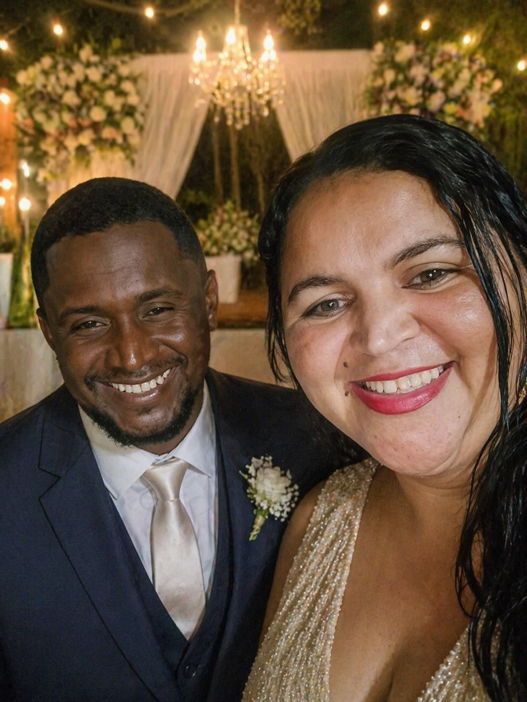

Samira & José Ivan
16 . Maio . 2026 - Às 19h30
"O amor é paciente, é bondoso... Tudo sofre, tudo crê, tudo espera, tudo suporta."
1 Coríntios 13:4, 7-8
Confirmar Presença
Lista de Presentes
Local da Celebração
Xenofonte Eventos
Rua Floriano Peixoto, nº 30,
Bairro São Félix
(Entre a rua 16 e a 17)